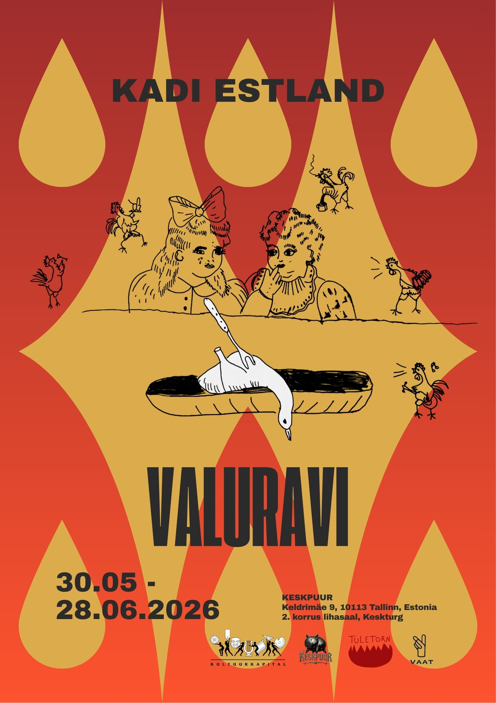

Valuravi
Kadi Estland
30.05 - 28.06.2026

------------
Valuravi
Opening : 30.05.26, 13:00
The exhibition reimagines the space as a corridor or a time capsule connecting one cage to another, from Soviet time to neoliberal capitalism. In this in-between space , something waiting for something to happen, how to remember or not to remember, and how to survive. Exploring memories and symbols from the artist's childhood, the works evoke memories that are sometimes painful but hopeful.
Kadi Estland (b. 1973, Estonia) is a feminist artist living and working between Estonia and London. Her practice spans conceptual embroidery, poetry, performance, installation, painting, and media art. Since the 1990s, she has been involved in several feminist collectives, including Nancy Nakamura Self of Ideas and Feminismbuilder. She has also contributed illustrations and political cartoons to the feminist zine Kolkaplika. Her work offers a sharp feminist critique of social inequality and power structures.